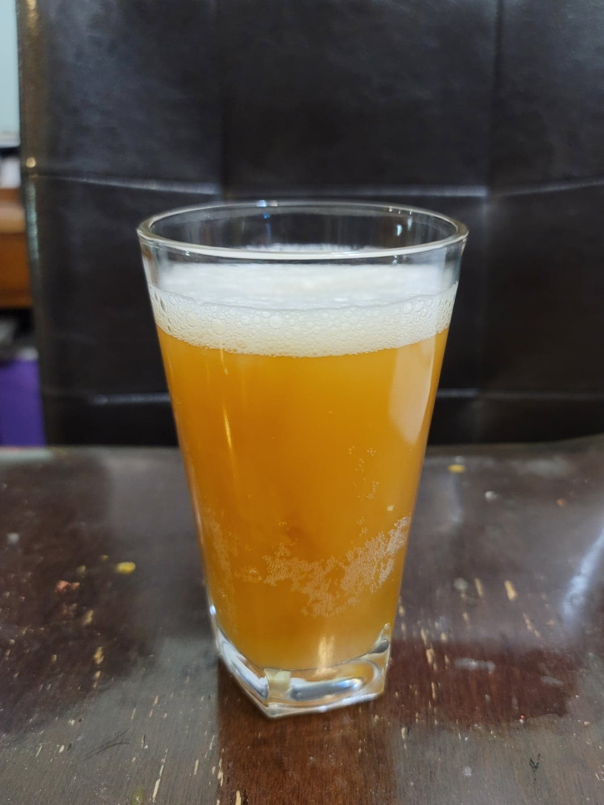

Kvass

Ingredients:
Kvass:
- 1 lb Bread, preferably Dark rye
- 3 quarts Boiling water, nonchlorinated
- 2 tbsp Sourdough starter
- 1 cup Sugar
Optional Add-ins:
- Raisins
- Mint
- Lemon rinds
- Apples
- Honey
Instructions:
- Preheat an oven to 350 degrees Fahrenheit.
- Cube the bread and place into the oven. Bake for about 20 minutes, tossing halfway, or until very dark and almost burnt on both sides.
- Transfer the bread to a gallon jar. Pour the boiling water over the bread. Let sit overnight, about 12-18 hours.
- Strain out the bread from the liquid, squeezing out as much liquid as possible. Add more water as needed to make 3 quarts. Stir in the sugar and sourdough starter. You can add the flavor add-ins now or during the 2nd fermentation.
- Let ferment for at least 2 days or until it reaches a flavor you like. Then either drink right away, refrigerate, or transfer to 16 oz flip-top bottles for a 2nd fermentation.
- For 2nd fermentation, you can add flavorings to individual bottles if desired. For bottles without flavoring, you can add 1/2 tsp sugar to help speed up its fermentation time to keep up with the flavored bottles. Let ferment for 1-5 more days or until the kvass reaches your desired carbonation level. Then refigerate until completely chilled. Serve cold.